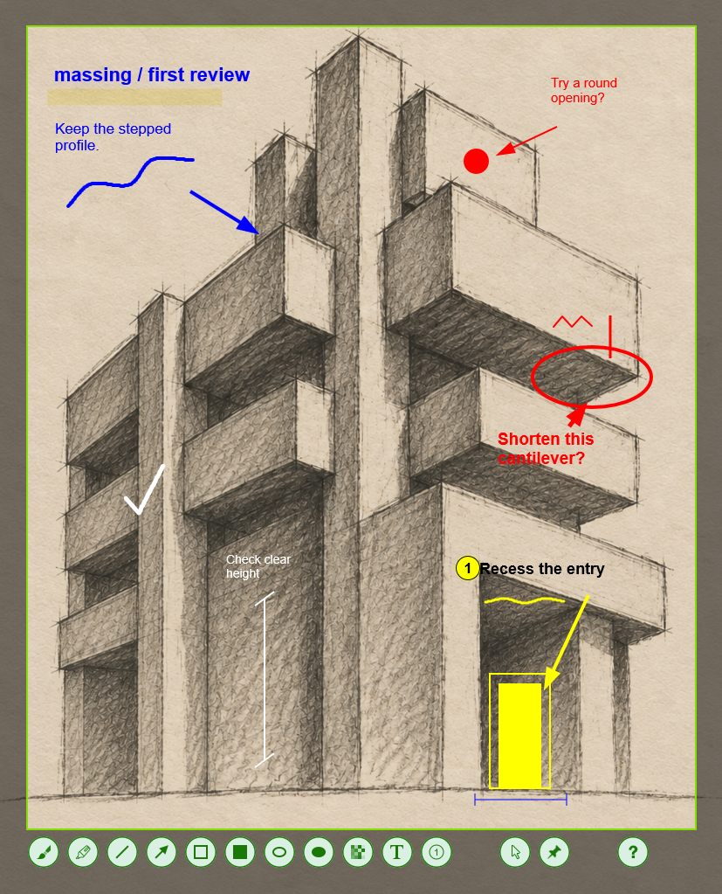

choose your frame.
A region. A window. One monitor or the whole desktop. Precise selection, even across screens with different scaling.
find your frame
A screenshot is a starting point.
Capture what matters. Mark it up.
Make yourself understood.
get greenflame v1.0.0-rc9 · pre-release
Windows 11 · x64 · Free & open source

the working parts / 01—03
Just enough to turn “over there”
into “right here.”
A region. A window. One monitor or the whole desktop. Precise selection, even across screens with different scaling.
Arrows, shapes, highlights, text, and numbered steps. Put the emphasis exactly where it belongs.
Copy it. Save it. Pin it on screen. Or reach for the command line and make capture part of your workflow.
from prompt to picture
AI agents can easily use greenflame’s command line to capture a screen or annotate an existing image. Built-in help lets agents discover the available commands and options on their own, without you walking them through each step. A JSON file describes the arrows, shapes, highlights, and notes; greenflame renders them into a ready-to-share image.
greenflame.exe --input draft.png --annotate review.json --output reviewed.pngTurn a design review, bug report, or explanation into feedback you can see.
explore the command linefrom screen to shared
Run greenflame. Press Print Screen.
Select, annotate, and carry on.